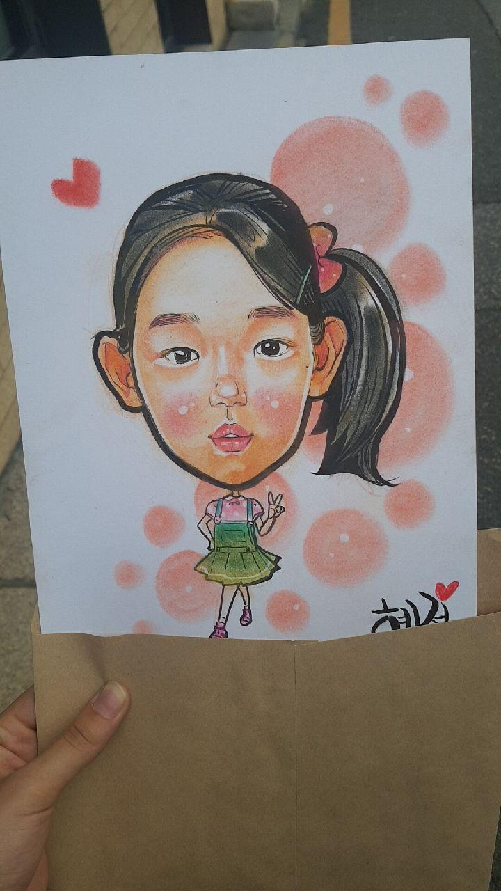
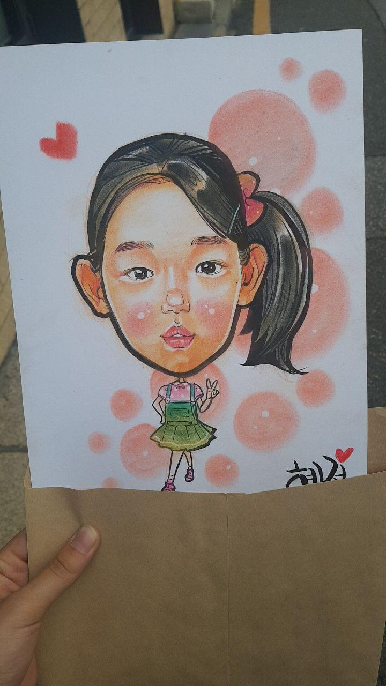
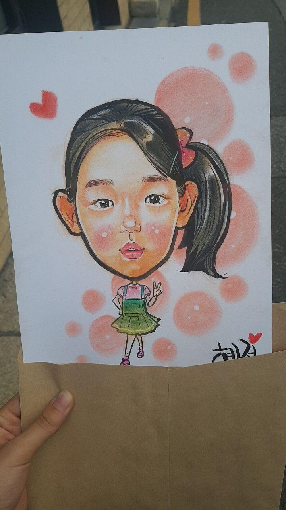

하지만 주민들이 거주하는 공간이므로 관람도 좋지만
조용하게 배려하면서 보는 것이 좋을 것이다.
북촌한옥마을은 곳곳에 작은 재미요소들이 있다.
위 사진은 풍경사진들을 판매하고 있다.
하지만 재밌게도 무인으로 양심판매를 하고 있다.
실제 작가들이 작업실로 사용을 하면서
무료 전시회를 열기도 한다.

작가들이 캐리커처를 하는 것을 볼 수 있다.
저렴한 가격에 할 수 있으니 해보는 것도 추천한다
다양한 예술가들이 본인의 재능들을 보여주기도 한다.
거리에 앉아 보거나 듣는 것도 좋을 것 같다.
그 외에도 직접만든 물건을 판매도 하니 가보는 것도 좋다.